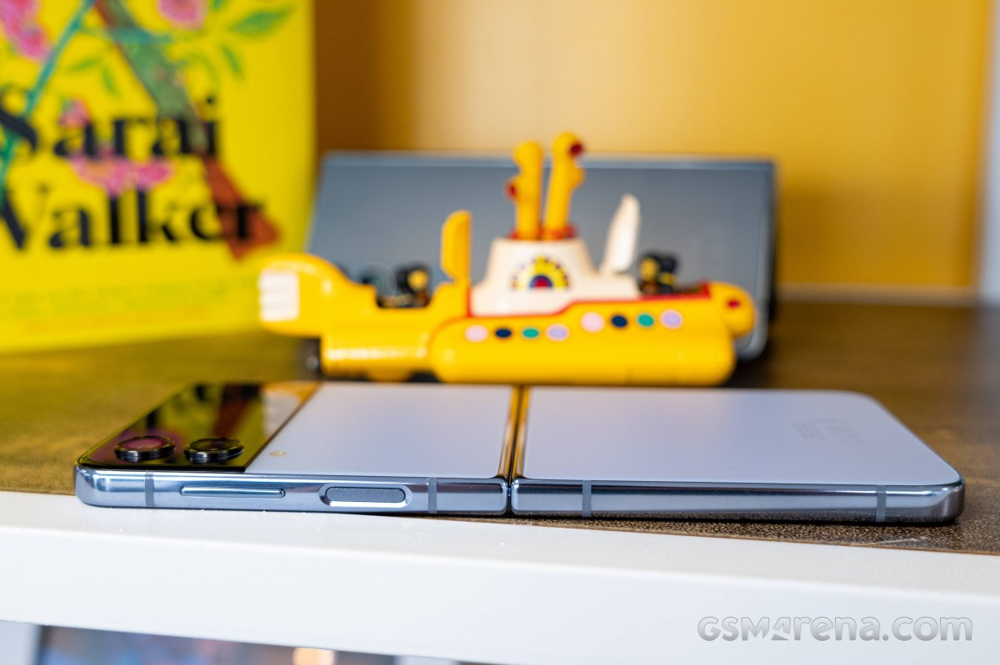

Introduction
Another Samsung Unpacked event has come to pass, and this one brought us the fourth generation of foldable Galaxy smartphones. Quite expectedly, Samsung announced the fourquels of the Fold and Flip, the first being more like a foldable tablet, while the Flip - a nostalgia-sprinkled flip phone.
Today, we will be exploring the Samsung Galaxy Z Flip4, which is much like the Galaxy Z Flip3, but better. This is a formula that's been in use for years now as the technology cannot advance as fast as makers are bringing a new version of their phones. But while the new Z Flip4 won't make many (if any) Z Flip3 owners upgrade, it improves enough bits to make even more people think of getting this new foldable flagship.
Samsung has improved on the Galaxy Z Flip3 by tweaking all weak points both reviewers and users have agreed upon - low-light camera performance, battery life, charging speed. And, of course, the new Z Flip4 gets to boast the most current Android chip - the Snapdragon 8+ Gen 1.
Samsung Galaxy Z Flip4 review

The new Galaxy Z Flip4 features the same internal Dynamic AMOLED 2X and external Super AMOLED screens as the Z Flip3. But thanks to reduced bezels around the foldable screen and a flatter aluminum frame, the Z Flip4 is now a bit shorter and with a thinner hinge.
The Foldable Dynamic AMOLED 2X remains equally adaptive with up to 120Hz refresh rate and equally bright with a peak brightness up to 1200 nits. The crease in the middle is here to stay for now and so is the perforation for the selfie camera.
The Z Flip4 is IPX8-rated for water resistance - a feature that only Samsung offers across its third and fourth generation of foldable devices. Samsung and Sony are the only two makers that aim to offer water protection on most of their phones, and we truly appreciate the effort.
Besides the chipset upgrade, the Galaxy Z Flip4 also features an improved camera system on the back. It is still a dual-camera setup, but the main shooter now relies on a larger 12MP sensor with 1.8µm pixels coupled with a wider 24mm f/1.8 OIS lens. This new sensor should allow for a 65% improvement in light gathering and improve the low-light performance. The 12MP ultrawide and 10MP selfie cameras remain the same as on the Flip3.
The Galaxy Z Flip4 is powered by a 12% larger battery - it now packs a 3,700mAh cell, up from 3,300mAh within the Flip3. And even better, the phone now supports 25W fast charging, up from the sluggish 15W. The wireless fast charging has been sped up, too, now up to 15W.
Samsung Galaxy Z Flip4 review
And that's about it - a new chipset, main camera, battery, and improved charging speed. And the latest Android version with the most current One UI, of course.
Samsung Galaxy Z Flip4 specs at a glance:
- Body: 165.2x71.9x6.9mm, 187g; Plastic front (opened), glass back (Gorilla Glass Victus+), aluminum frame; IPX8 water resistant (up to 1.5m for 30 mins), Armour aluminum frame with tougher drop and scratch resistance (advertised).
- Display: 6.70" Foldable Dynamic AMOLED 2X, 120Hz, HDR10+, 1200 nits (peak), 1080x2640px resolution, 22:9 aspect ratio, 426ppi; Cover display:, Super AMOLED, 1.9 inches, 260 x 512 pixels (Gorilla Glass Victus+).
- Chipset: Qualcomm SM8475 Snapdragon 8+ Gen 1 (4 nm): Octa-core (1x3.19 GHz Cortex-X2 & 3x2.75 GHz Cortex-A710 & 4x1.80 GHz Cortex-A510); Adreno 730.
- Memory: 128GB 8GB RAM, 256GB 8GB RAM, 512GB 8GB RAM; UFS 3.1.
- OS/Software: Android 12, One UI 4.1.1.
- Rear camera: Wide (main): 12 MP, f/1.8, 24mm, 1.8µm, Dual Pixel PDAF, OIS; Ultra wide angle: 12 MP, f/2.2, 123˚, 1.12µm.
- Front camera: 10 MP, f/2.4, 26mm (wide), 1.22µm.
- Video capture: Rear camera: 4K@30/60fps, 1080p@60/240fps, 720p@960fps, HDR10+; Front camera: 4K@30fps.
- Battery: 3700mAh; Fast charging 25W, 50% in 30 min (advertised), Fast wireless charging 15W, Reverse wireless charging 4.5W.
- Misc: Fingerprint reader (side-mounted); NFC; stereo speakers; Samsung Pay (Visa, MasterCard certified).
Going through the specs sheet, there is little missing - a zoom camera comes at the top of our head. The improved hinge should be fine for at least 200,000 cycles, and we appreciate the improved Gorilla panels and the tougher aluminum frame, even if by small margins.
Unboxing the Galaxy Z Flip4
The Galaxy Z Flip4 ships with an incredibly thin and lightweight box. It is lying open, face-down in there, waiting for its first user. A thin paper compartment houses the USB-C cable and the SIM ejector. And that's all you will find.
Samsung Galaxy Z Flip4 review
There is no charger or case within the retail box, and if you don't own Samsung's 25W power adapter, it's probably a good idea to buy one so you can use that fast charging.